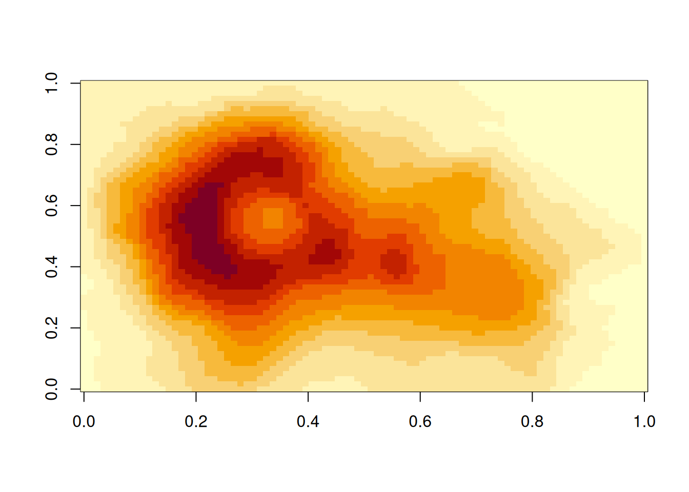
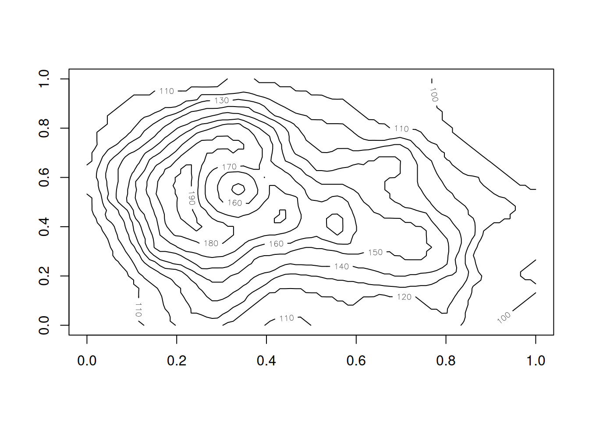

You need figures and tables in your own writing, whether it be a journal paper, an internal document, or some documentation. In this section, we discuss how to add figures and tables into your Quarto document, and how to provide captions for them.
8.1 Overview
Teaching 10 minutes
Exercises 10 minutes
8.2 Questions
How do I create a figure in Quarto?
How do I create a table in Quarto?
How do I add captions for figures and tables?
8.3 Objectives
8.4 Tables
To produce a table, I recommend you use the kable function from the knitr package.
Other table R packages
There are many other table making pieces of R packages, such as gt, formattable, reactable, and flextable). But I think you can get 90% of the way there with kable from knitr, and for the
8.4.1 Demonstrating using tables
kable takes a data.frame as input, and outputs the table into a markdown table, which will get rendered into the appropriate output format.
For example, let’s say we wanted to share the first 6 rows of our gapminder data.
This gives us the following output
top_gap <-head(gapminder)knitr::kable(top_gap)
country
continent
year
lifeExp
pop
gdpPercap
Afghanistan
Asia
1952
28.801
8425333
779.4453
Afghanistan
Asia
1957
30.332
9240934
820.8530
Afghanistan
Asia
1962
31.997
10267083
853.1007
Afghanistan
Asia
1967
34.020
11537966
836.1971
Afghanistan
Asia
1972
36.088
13079460
739.9811
Afghanistan
Asia
1977
38.438
14880372
786.1134
So how does that work? kable prints out the following:
And this then gets rendered as a table. This works for HTML, PDF, and word!
8.4.1.1 Adding captions to a table
Now, say that we wanted to include a caption? We use the caption argument. This will also automatically number the table (woo! We’ll cover this later).
knitr::kable(top_gap,caption ="The first 6 rows of the dataset, gapminder")
The first 6 rows of the dataset, gapminder
country
continent
year
lifeExp
pop
gdpPercap
Afghanistan
Asia
1952
28.801
8425333
779.4453
Afghanistan
Asia
1957
30.332
9240934
820.8530
Afghanistan
Asia
1962
31.997
10267083
853.1007
Afghanistan
Asia
1967
34.020
11537966
836.1971
Afghanistan
Asia
1972
36.088
13079460
739.9811
Afghanistan
Asia
1977
38.438
14880372
786.1134
Some other useful features of kable include setting the rounding number, with the digits option.
For example, we could present the first 2 digits of each number like so:
knitr::kable(top_gap,caption ="The first 6 rows of the dataset, gapminder",digits =2)
The first 6 rows of the dataset, gapminder
country
continent
year
lifeExp
pop
gdpPercap
Afghanistan
Asia
1952
28.80
8425333
779.45
Afghanistan
Asia
1957
30.33
9240934
820.85
Afghanistan
Asia
1962
32.00
10267083
853.10
Afghanistan
Asia
1967
34.02
11537966
836.20
Afghanistan
Asia
1972
36.09
13079460
739.98
Afghanistan
Asia
1977
38.44
14880372
786.11
There are other options that you can set in kable, but for these options will get you through a large majority of what you need. For more information on what kable can provide, see ?knitr::kable.
There are many different ways to produce tables in R. We have chosen to show kable today because kable is minimal, but powerful. If you want to extend kable to do more, look at kableExtra. For PDF/LaTeX output, I found the option kableExtra::kable_styling(latex_options = c("hold_position")) particularly nice to just put the table where it should be, goshdarnit.
Your Turn
Using the “02-qmd-figures-chunks.qmd”
Create a summary of your gapminder data, put it into a table.
Add a caption to this table.
Set the number of decimals to 2.
8.5 Figures
Printing figures is probably my favourite feature of Quarto. It is actually relatively straightforward in the case of plots. You provide the plot you want to show in a code chunk!
Demo using gapminder
For example, I can print a plot of the gapminder data for Australia like so:
Inserting a caption for a figure is a little bit different. The caption argument is controlled in the chunk option, under the option, fig-cap.
So to insert a figure, we do the following.
```{r}#| label: gg-oz-gapminder#| fig-cap: "Life expectancy from 1952 - 2007 for Australia. Life expentancy increases steadily except from 1962 to 1969. We can safely say that our life expectancy is higher than it has ever been!"library(ggplot2)library(dplyr)gapminder |> filter(country == "Australia") |> ggplot(aes(x = lifeExp, y = year)) + geom_point()```
Life expectancy from 1952 - 2007 for Australia. Life expentancy increases steadily except from 1962 to 1969. We can safely say that our life expectancy is higher than it has ever been!
Your Turn
Using 02-qmd-figures-chunks.qmd
Create a plot
Add a figure caption
8.5.1 Adding multiple (sub) figures and (sub) captions
Sometimes you want to add multiple figures that are linked, or slightly different views of similar data and then reference them as Figure 1A and Figure 1B. You can do this with layout-ncol and fig-cap, and reference the figures with @fig-<chunk-name>-1@fig-<chunk-name>-2. For example:
```{r}#| label: fig-volcanos#| layout-ncol: 2#| fig-cap: #| - "An image plot of Auckland's Maunga Whau Volcano"#| - "A contour plot of Auckland's Maunga Whau Volcano"image(volcano)contour(volcano)```

Figure 8.1: An image plot of Auckland’s Maunga Whau Volcano

Figure 8.2: A contour plot of Auckland’s Maunga Whau Volcano
We can see the image plot as (@fig-volcanos-1) Figure 8.1 and the contour plot as @fig-volcanos-2Figure 8.2.
We cannot always generate the graphics that we want - for example, we might have an image of something that we want to show, or perhaps a nice flowchart someone else made.
In our case, say we wanted to insert the Statistical Society of Australia logo into our document, there are two ways we can do this.
With markdown syntax
with knitr::include_graphics()
Markdown syntax
The markdown syntax to insert an image is: {options}
Demo: inserting a logo
So we could insert the new SSA vic logo by doing the following:
``````
Which would give us the following output:
The new, gorgeous SSA Logo has a hidden element, can you see it?
But say that we want more control over the output, like we want to center the image, and we want to make it smaller? Then you can use knitr::include_graphics(), and control the figure alignment using the options fig-align, and add a caption with fig-cap.
```{r}#| label: ssa-logo#| fig-align: center#| fig-cap: "The new SSA logo, which is actually a scatterplot, which is super neat!"knitr::include_graphics(here::here("figs", "ssa-logo.png"))```
{kind=link}